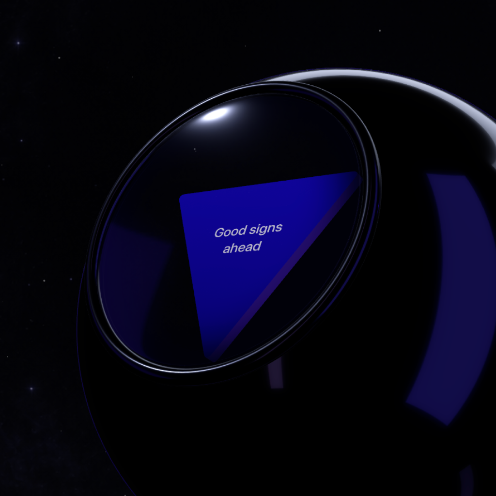

A little wonder for your day
Ask with
intent.
A little magic 8-ball for the questions on your mind. Shake for a random answer, or explore a question with optional on-device AI.
For entertainment only · Intended for adults
Немного волшебства на каждый день
Задайте
свой вопрос.
Волшебный шар для вопросов, которые не дают покоя. Встряхните его для случайного ответа или попробуйте необязательную модель ИИ на устройстве.
Для развлечения · Для взрослых

✦ A moment of chance
Shake the ball for a playful, random answer.
✦ Момент случайности
Встряхните шар, чтобы получить случайный ответ.
◈ On-device AI
Download the optional experimental English model and explore questions on your device.
◈ ИИ на устройстве
Скачайте необязательную экспериментальную модель для вопросов на английском языке.
☾ Keep perspective
Answers are not advice. Make important decisions with care.
☾ Сохраняйте критичность
Ответы не являются советом. Принимайте важные решения с осторожностью.